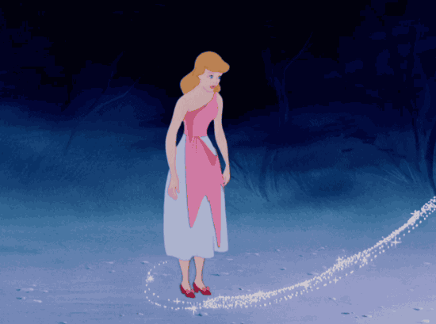

A ERA DE PRATA (1950 - 1967)
|
Com o fim da guerra, o estúdio viveu um período de alívio e ressurgiu com produções mais trabalhadas que iriam prosperar por quase duas décadas.
A Era de Prata também ficou marcada por filmes que teriam tons mais suaves de cor, passando a ideia de algo mais leve e mágico após os anos conturbados da guerra. Filmes como Cinderela, Alice no País das Maravilhas, Peter Pan, A Bela Adormecida e 101 Dálmatas foram os que se destacaram no período.  Fora das animações, o Parque da Disney foi inaugurado em 1955 e a empresa deixaria de ser apenas um estúdio para uma mega corporação de entretenimento. Porém, a partir da metade dos anos 60, ocorreram dois grandes episódios que abalariam a Disney: a Guerra do Vietnã e a morte do fundador Walter Disney. |